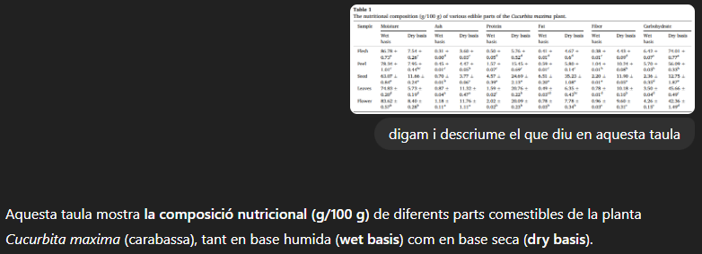

He trobat diferents articles científics que estudien el meu tema i els trobareu a continuació en format APA7. APA7 és una forma d'escriure un article científic.
Aquesta taula compara les propietats (pH, sals solubles i el contingut de les formes solubles). Mostrant que la carabassa abans que s'utilitzi el fertilitzant químic té més pH, sals solubles i en el cas del contingut de les formes solubles és més baix abans que es fes servir el fertilitzant que després.


A ChatGPT li he enviat el document per comprovar que ell em deia el mateix que deia al document. He pogut comprovar que ell em donava dades errònies fins i tot dient que l'article que jo li havia enviat es referia per complert a Nigèria i la desnutrició a les zones rurals. Després que em digués aquesta barbaritat li he anat preguntant coses a les quals es referia l'article i ell em continua mantenint la mentida fins i tot preguntant-me si volia que em busqués algun article referent amb les carabasses. Després de veure que no sap ni llegir un document que li acabava de donar, li he tornat a enviar el document que li havia donat al principi i em deia que aquest article sí que parlava sobre les carabasses. Tot seguit li he dit que els dos articles que li havia donat eren completament iguals i ell ha sigut capaç de dir-me que els dos documents eren iguals sense saber reconèixer el seu propi error.
En questa taula el que es pot observar a simple vista es que
